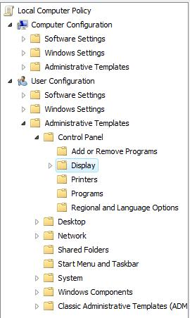

Group Policy¶
BGInfo¶
Download BgInfo from here.
Do the following in Group Policy Management:
Edit the BGInfo settings to suit your needs.
Save your settings in the same place as bginfo.exe.

Add
C:\bginfo\name.bgi /SILENT /TIMER:0 /NOCLIENTPROMPTto the argument field in the shortcut property in Group Policy Management.
Disable Sound¶
Under Computer Configuration, under Policies, under Administrative Templates, do the following:
Disable UAC¶
Lock Computers When Idle¶

Internet Explorer Settings¶
Favourites for Intranet¶
Under Computer Configuration, under Preferences, under Windows Settings, under Shortcuts, do the following:

Homepage¶

Trusted Sites Zone¶
License Server - Point TS to License Server¶
Under Computer Configuration, under Policies, under Administrative Templates, do the following:

Mapped Drives¶
Under User Configuration, under Preferences, under Windows Settings, under Drive Maps, do the following:

Remote Assistance¶
Under Computer Configuration, under Policies, under Administrative Templates, do the following:
WSUS¶
Under Computer Configuration, under Policies, under Administrative Templates, do the following: